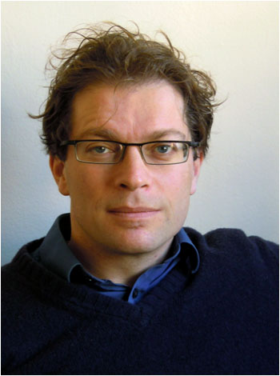

Senior Researcher
Leader of the
LAMP Team
Joost van de Weijer leads the Learning and Machine Perception (LAMP) team at the Computer Vision Center, Universitat Autònoma de Barcelona. He received his PhD from the University of Amsterdam in 2005, focusing on physics-based computer vision for improved color understanding in images. He was a Marie Curie Intra-European Fellow at INRIA Rhône-Alpes, France, and later held a Ramón y Cajal fellowship at the Universitat Autònoma de Barcelona. His current research centers on lifelong learning in deep neural networks, encompassing areas such as continual learning, transfer learning, and domain adaptation. In addition, he works on generative models for visual data, with recent efforts aimed at improving efficiency and text-based control in diffusion models. He is a Fellow of the ELLIS Society.
For a complete publication list, see Google Scholar.
We are interested in hearing from excellent PhD students, postdoctoral researchers, and visiting students. For open positions see here.